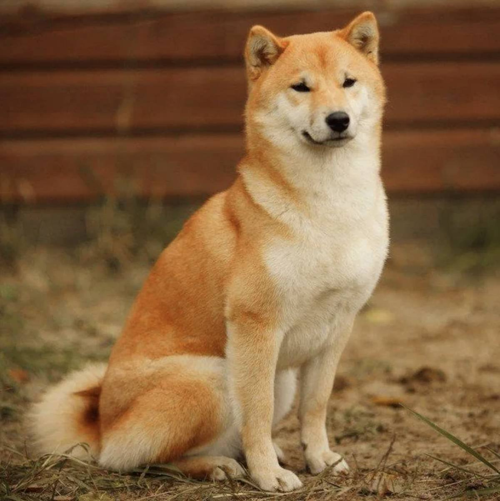

Сиба-ину

Происхождение: Япония
Размер: Малые (рост: 35–41 см, вес: 8–12 кг)
Характер: Независимые, умные, чистоплотные
Особенности: Могут быть упрямыми, требуют терпеливой дрессировки. Редко лают, но издают "кричащие" звуки. Шерсть почти не пахнет
Здоровье: Склонны к аллергиям, болезням суставов